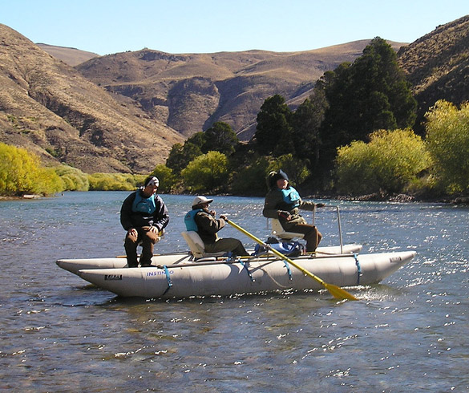

Pesca en el Lago Nahuel Huapi: Un Paraíso Patagónico
Ubicado en el corazón de la Patagonia Argentina, el Lago Nahuel Huapi ofrece una experiencia de pesca única. Con sus aguas cristalinas rodeadas por paisajes impresionantes de montañas y bosques, este es el destino ideal para los amantes de la pesca deportiva. Desde la famosa trucha arco iris hasta la majestuosa trucha de lago, el Nahuel Huapi te invita a disfrutar de momentos de tranquilidad, acción y una conexión profunda con la naturaleza. Prepárate para una jornada de pesca inolvidable en uno de los destinos más emblemáticos de Argentina.